Зерттеу тобы:
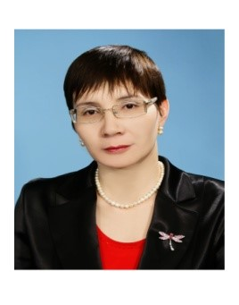
Егенисова Алмажай Құлжанқызы , Педагогика ғылымдарының кандидаты, психология доценті, Yessenov University
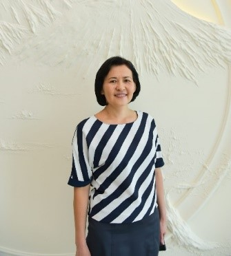
Мендалиева Шынар Оразалиевна,
Техника және технология ғылымдарының
Магистрі, Yessenov University
Мамбетова Алтын Ибрагимовна, Культурология кандидаты, Yessenov University
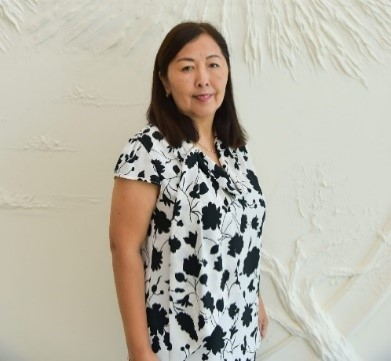
Аккенжеева Анар Шынабаевна, техника ғылымдарының кандидаты, Yessenov University
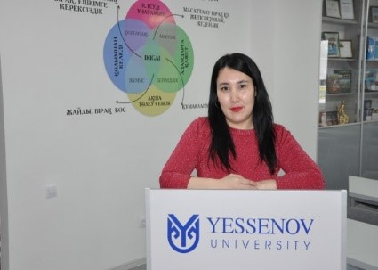
Косымбаева Шынар Исабековна Менеджмент ғылымдарының магистрі, Yessenov University
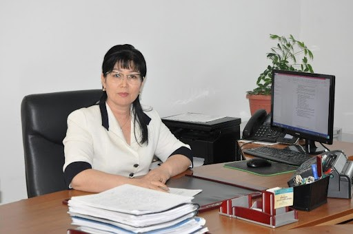
Кошимова Бибатпа Амирхановна, филология ғылымдарының кандидаты, профессор, Yessenov University
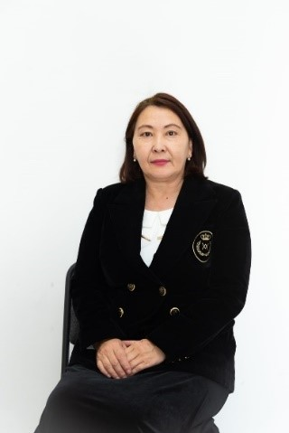
Естурлиева Айгуль Икласовна, Экономика ғылымдарының кандидаты, Yessenov University
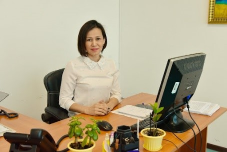
Джанисенова Алия Мейрбековна, PhD, Yessenov University
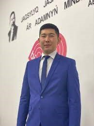
Әбидин Әбубәкір Надирхожаұлы,
Әлеуметтік ғылымдар магистрі , Yessenov University
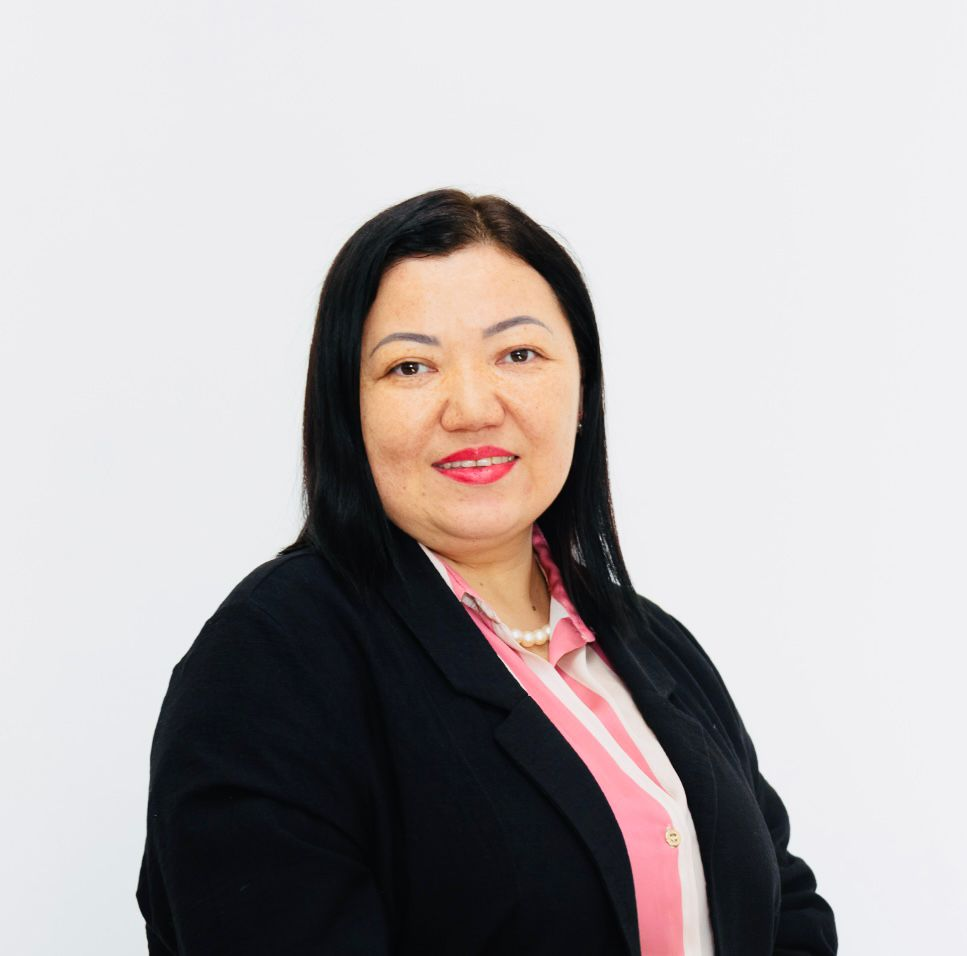
Джумабекова Роза Амановна, Доктор PhD, Yessenov University
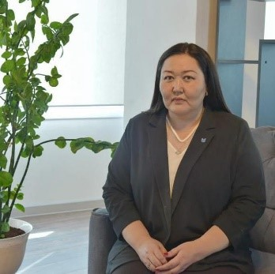
Аманиязова Гулимай Демегеновна, Экономика ғылымдарының кандидаты, профессор, Yessenov University
Шарипова Айгерим Батырсариевна, Педагогика ғылымдарының магистрі, Yessenov University
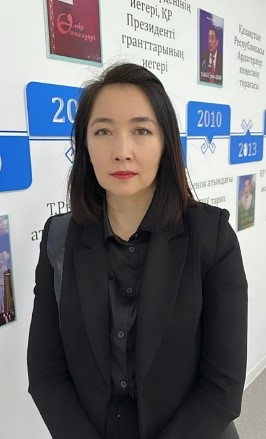
Жайлаубаева Жадра Алламратовна Экономика ғылымдарының магистрі, Yessenov University
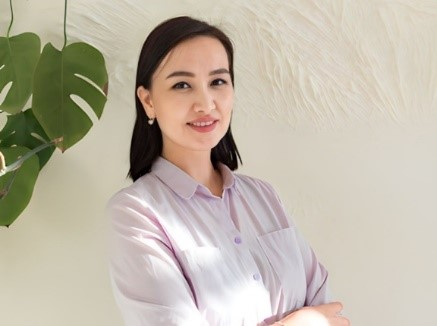
Актилеуова Гулдана Молдашовна, Экономика ғылымдарының магистрі, Yessenov University